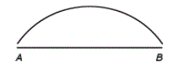
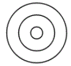
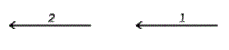

Беседа 3204 от 3877 · Беинса Дуно
Разумни отношения
„Добрата молитва“
Имате ли зададена тема? „Имаме.“ Четете. (Прочете се темата „Причини и последствия от изкривяването на правата линия.“)


Разправяше ми един ученик, който следвал в габровската гимназия, в пети или шести клас бил. Един път не си знаел урока по математика. Дошъл учителят и ученикът казал, че не е готов, защото го болял зъб. Не че го болял зъб, но той казал, че го боли, за да го извини учителят. И той казва: „До вечерта ме заболя един зъб и този зъб трябваше да го извадя.“
В дадения случай защо зъбът става виноват? Понеже зъбът е в главата – близо до мозъка, като става известно размирие вътре в устата, мозъкът не може да работи. Вземете, в сегашния живот някой има да дава някому. Върви по права линия. Този, на когото има да дава, е насреща му. Веднага, който има да дава, не върви по права линия, но веднага пречупва линията. Като го види, изведнъж кривва. Защо кривва? Съпротивление има, той мисли, че ще го пита кога ще си плати дълга, накарва го да изкриви пътя си. Може в каквото и да е направление да кривне, в една или в друга страна може да се отбие. Вие не подозирате причините, казвате: „Защо се отби в тази улица?“ Работата му е там. Може би има работа, пък може би иска да избегне срещата с кредитора. Или да допуснем, че той е едни анархист, върви, но насреща му има засада или има стражар, който ще го хване – веднага кривне. Или ако вземете сегашните апаши в Америка, тактика имат, знаят из коя улица да кривнат. Човек, като се намери в затруднение, веднага изкривява пътя си в една или друга посока. Някой път се случва, че онзи, който изкривява пътя си, някой път кривне вляво, някой път кривне вдясно.
Казвате: човек трябва да върви в правия път – нито вдясно, нито вляво, направо да върви. Туй сега е важно. Ако вие тръгнете по море, може да срещнете моряци. Но параходите, имат си карта, не могат да вървят по права линия. Даже и във въздуха не могат да вървят по права линия. Оказа се, че въздушната среда не е навсякъде равна, налягането не е равномерно. Някъде въздухът е гъст, някъде е по-рядък. И там има долини. Сегашните авиатори като пътуват, аеропланът пада около двеста метра, влиза в една по-рядка среда. Пък ако движението е по-слабо, може да стане катастрофа. По тая причина са ставали катастрофи. Едва сега се изучава въздушното пространство – то не е навсякъде равно, не е идеално, както мислим, няма тази идеална среда. Даже пространството, през което се движи светлината, етерът, има едно малко съпротивление. Не се движи светлината по права линия, ами има известни трептения нагоре и надолу.
Та казвам, когато говорим за средата, човек трябва да изучава тези закони на средата, за да се справи, понеже средата не е навсякъде еднакво гъста. Запример един параход не може да се движи с такава бързина, с каквато може да се движи един аероплан. Понеже параходът се движи в една по-гъста среда – водата, едва ли може да се движи със седемдесет–осемдесет километра, когато във въздуха развиват една скорост от четиристотин, петстотин, шестстотин, седемстотин километра в час. Туй движение във водата е невъзможно, понеже съпротивлението е по-голямо там.
В сегашния обществен живот във физическия свят ние изваждаме от тия резултати закони. Така някой човек среща препятствия в умствения си живот, някой път в духовния, в чувствения свят среща съпротивление, някой път и в света на човешката воля има съпротивление, някои работи мъчно стават. Или по някой път имате затруднение във вашите чувства, вие не може да функционирате правилно, вие се движите между хората, и не може чувствата ви да бъдат хармонични. Ако пътувате през гората и срещнете мечка, какво става? Чувствата ви веднага се свиват. Срещате един ваш приятел в една хубава среда, веднага имате едно хубаво разположение. При някои от опасните животни свиват се чувствата, не може да бъдете разположени. Да кажем, вие се намирате на бойното поле, както сега се бият. Казвате: „Човек трябва да пази хладнокръвие.“ Най-големият герой може ли да пази хладнокръвие? Той ще има толкоз сътресения, толкоз треперения, какво ли няма да си помисли. Като мине войната, ще разправя, че е бил голям герой на бойното поле. То е празна работа – геройство.
Казвам, има какво да се изучава. По някой път трябва да изучавате живота. Казвате: „Защо така ни е даден животът?“ Представете си, че вие се движите в една планинска местност като екскурзианти, намирате се в трудно положение. Какво ще кажете? „Защо планината е направена така?“ Вие задавате този въпрос защо планината е създадена така, но този въпрос ще разреши ли някоя мъчнотия? Казвате: „Не може ли тази планина да не е така стръмна, с такива големи отсичания?“ Значи трябва да се приспособяваш на условията. Щом се качваш на планината, ще изучаваш планината, както е създадена, ще намериш пътя на най-малкото съпротивление. Ако влезеш в един труден път, ти непременно можеш да разрешаваш въпроса. Сега, щом се намериш в планината в затруднено положение, ако се запиташ защо тази планина е така направена, има ли разрешение на въпроса? Или допуснете, че вие се качвате по-високо в планината, температурата се изменя. Тръгнете от долината – топло, имате двайсет, двайсет и пет градуса топлина. Като се качвате горе на планината, температурата дойде до нула градуса. Питате защо се изменя температурата. Какъв отговор ще си дадете? Вие питате, но туй не разрешава въпроса. Значи при изменението на температурата трябва да имате по-добри дрехи.
Следователно топлината, която носите от долината в планината, трябва да я икономисвате, икономия на тази топлина трябва. Щом тръгвате от долината в топло време, носите по-тънки дрехи, казвате: „Ще се носят. Дебелите дрехи са тежки.“ Казвате: „Не си струва човек на високото място да носи тежки дрехи.“ Щом се качвате нагоре, тежките дрехи започват да олекват. Колкото става по-студено, намалява се тежестта на дрехите. Колкото става по-топло, дрехите стават по-тежки. Лятно време, ако носите една шуба, която носите зимно време, ще се усещате натоварени. Зимно време усещате, че шубата е на мястото си, може да я носите. Зимно време човек е по-издръжлив, по-силен.
Казвам, постоянните промени, които стават в човешкия организъм, се дължат на външните промени, които стават във физическия свят. Запример при студеното време човек се свива. Някой път вие усещате в себе си едно свиване, което се дължи на онази температура, която изменя количеството на топлината. Тогава капилярните ви съдове се свиват, кръвообращението не става правилно. Колкото се качвате нагоре в една планинска местност, налягането се намалява и понеже напрежението отвътре е по-голямо, на голяма височина капилярните съдове започват да се пукат. Ако се качи някой, който е много деликатен, на една височина от три хиляди метра, както е Мусала, някой път може да усети, че се пукат капилярните съдове и започне да тече кръв от носа. Налягането отвън е по-малко, напрежението отвътре е по-силно и вследствие на това кръвта излиза. Ако се качи още по-нависоко, става и задушаване в дробовете, дишането не става правилно.
Та казвам, когато човек дойде на земята, постоянно трябва да се ориентира в средата, в която живее. Духовният живот представя мъчнотия за много хора по единствената причина, понеже духовният живот представя планинска местност, трябва да се качваме. Обикновеният физически живот, той е една равнина, там си свикнал вече. Щом искаш да станеш духовен, тръгнеш по планинските върхове, изменят се условията. По някой път искаме да убедим хората да станат духовни. Казват: „Кой ще ходи по високите места? Не сме свикнали.“ Изменя се вече налягането.
Казвам, да се живее духовно е доста трудна работа. Има духовен живот на голяма височина. Човек трябва да бъде много умен, за да може да се съобрази с окръжаващата среда.
Или да допуснем, че вие присъствате на някой музикален концерт някъде. Че той по планините става. Хубавата музика не е на равнината. В музикалния свят на голяма височина трябва да се качиш. Значи там ти може да схванеш тия вълни, трябва да има рядка среда, дето се предават всички музикални нюанси. Ако средата е гъста, не може да се предаде хубавата музика.
Казвам, както хората трябва да се приспособяват, както тия алпинисти, които постоянно се тонират по високите места, така и хората с хиляди години в духовния свят се приспособяват, за да станат духовни. Не е лесна работа да бъдеш духовен човек. Самата област, в която си, не е лесно да я пропътуваш. От туй гледище човек трябва да вземе всичките предпазителни мерки, да се справи с всичките мъчнотии, които ще срещне в терена, където се движи. Хората, които се занимават с пътуването по планините, наблюдават, правят съображения: на хиляда метра височина какви течения има, на две хиляди метра какви течения има, изучават тия течения. В каквато област искат да пътуват, трябва да знаят какви са теченията, какви са метеорологическите промени, които стават. Някой път горе има доста големи бури в пространството. Туй трябва да се знае. Сега тепърва трябва да изучавате промените в духовния живот. Вие във вашия духовен живот срещате някои пертурбации, които стават вътре във вас, вие сте в една област, дето бури има. Тия бури не са насочени против вас, то е едно течение. Тия течения, те не съвпадат. Ако искате да го преминете, вие ще се повлияете.
Запример вие искате да бъдете справедлив или имате идеята, че трябва да помагате на другите. Казваш: „Искам да помагам.“ Ти седиш при реката, не знаеш да плуваш, някой се дави там, искаш да му помогнеш. Ако знаеш да плуваш, ще идеш в реката, ще му помогнеш. Ти седиш, безпокоиш се, дави се пред тебе. Казваш, трябва да му помогнеш. Как ще му помогнеш? Трябва да имаш знание. Човек, и да иска някой път, не може да му помогне. Имате такъв пример: човек си ударил ръката или порязана е ръката. Искаш да му помогнеш, не знаеш как, не знаеш да направиш една обикновена превръзка. Искаш да му помогнеш. Като му помогнеш, не знаеш как да му отнемеш болката. Някой си изкълчил крака, не знаеш да му го наместиш. Ще отидеш да кажеш: „Няма нищо.“ Ще говориш за Господа, кажеш: „Господ ще оправи тази работа.“ Господ я оправил. Като страдаш, Той, Господ, ти говори. Като те боли кракът, Господ ти говори. Но и като ти наместят крака, пак Господ ти говори.

Сега вие питате кое е по-право? Имате: едно се отнася към две, както две към едно.
1 : 2 = 2 : 1.
Коя е причината, че едно си изкълчил крака? Едно си изкълчил крака по единствената причина, че е бил много занят с числото две. Да допуснем, че някой предмет ви интересува, някой път сте се захласнали. Като вървите по пътя нагоре, гледате, така е увлечено вниманието ви, че не гледате дали е гладко. И едно, и две вървят по същата посока. Едно минава при по-голямо съпротивление, за да хване две. Две намира по-добър път, затова кракът му не е изкълчен. Две хванал пътя на най-малките съпротивления. И едно е хванал пътя на най-малките съпротивления – той иска да пресече пътя на две. Той мислел, понеже бяга по-силно, че отдолу, като мине, ще го пресече, ще го хване, но този път е на най-големите съпротивления и вследствие на това неговият крак се изкълчва. С неговата философия той си изкълчил крака.
Може да направите един опит. Ако на един бинокъл, с който се гледа с двете очи, ако измените лупата на дясното око, турите лупа с по-голямо увеличение, да кажем десет пъти, на лявото око турите лупа, която увеличава двайсет пъти, какво ще имате? Ще имате две изображения. Едното ще бъде долу, другото ще бъде горе. Изображението от десет увеличения ще бъде долу, образът от двайсетото увеличение ще бъде горе. Ако гледате Мусала, ще видите две Мусали – едната долу, другата горе. Правили ли сте този опит? Може да направим този опит, този опит мога да го направя. Затова казват за някого: нависоко гледа. Всякога, когато човек гледа идеално, той не вижда предметите. Като гледате Мусала с увеличително стъкло, няма да видите Мусала на същото място. С голямото увеличение Мусала ще го видите нагоре, а той не е там. Другото изображение на Мусала ще бъде долу.
Този, който малко мисли, неговите предмети надолу се показват. Този, който високо мисли, предметите са нагоре, предметите не са намясто, изображенията не са намясто. Та по някой път светските хора казват: той високо мисли, не поставя нещата намясто. Но в големите увеличения, отдалеч като гледате един предмет, имате ясна представа за нещата. Този, който гледа през туй увеличително стъкло, има ясна представа, но той трябва да коригира, трябва да знае, че нещата не са така идеални – както ги вижда горе, тъй не може да става и долу.
Тук преди години, когато ние се заселихме на Изгрева, всички пътувахме направо през гората, нямахме никакви препятствия. Кой къде излезе, отива, не среща никакво съпротивление по цялото поле, идеално пътува. Сега, като тръгнеш, трябва да търсиш път, всички прегради трябва да заобикаляш: тук – тел, там – тел, препятствия какви ли не. Култура. Всичката местност стана културна, препятствия се явиха. Как мислите, кога е било по-културно, сега или тогава? Сега и ако на вас ви кажат направо да минете, вие ще прескачате. Тогава ще се намерите в противоречие. Ще ви кажат: „Кой ви позволи оттука да минете, защо не заобикаляте?“ Преди десет–петнайсет години направо щяхте да минете, никой нямаше да ви спре, да ви каже: „Защо минавате оттук?“ Всички минаваха свободно.
Хората сами по някой път си създават своите препятствия в живота. Тия препятствия показват, че тия хора не са културни. Дето има огради, не показва култура. Когато отвън има една ограда, както и да е, но триста метра – един двор ограден, друг двор от триста метра – и той ограден. В турско време всички дворове бяха оградени, защото разбойници имаше. Колкото оградата е по-голяма, по-безопасна е. Вратата здрава, ключалката здрава. В турско време, с такива прозорци ако си, всеки може да те обере. На прозорците ще има доста дебели железа – по три пръста, че като дойдат разбойниците, да не могат да влязат.
Та казвам, ако вие имате много правила в себе си, културен човек ли сте? Ако имате много закони, закони, закони, това култура ли е? Днес, ако минаваш през една Европа, ако минаваш през четири–пет държави, трябва да вземеш виза, да платиш и да искаш разрешение. Да искаш една виза, да кажем от Германия, трябва три–четири седмици да чакаш да ти позволят. Ако минаваш през Сърбия, трябва да ти позволят. Ако минаваш през Румъния, трябва да ти позволят. Ако минаваш през Русия, трябва да ти позволят. По-напред тази работа ставаше лесно – извадиш си паспорта.
Когато вие срещате съпротивление във вашия живот, казвате: човек не е свободен. През която държава ще минете, трябва да вземете позволение. Сега вие не можете да влезете в един двор. Като дойдете, ще позвъните. Не може изведнъж да влезете, ще почакате, и тогава ще влезете. Или сега ще идете до къщата, има звънец, ще позвъните. Ако ви отворят, ще влезете. Не може да влезете, да отворите вратата без позволение. Ако хората биха били културни, мислите ли, че те щяха да имат същия порядък на нещата? При сегашните условия на всеки ъгъл имате и стражар. Ако хората бяха културни, тия стражари щеше ли да ги има? Защо са стражарите? За някакъв инцидент да турят ред и порядък. Туй показва, че самите хора, които се движат по пътя, не знаят как да си регулират отношенията, че трябва да има някой да регулира отношенията им. Човек, като влезе в една държава, трябва да се подчини на законите, които съществуват. Този порядък трябва да го спазвате навсякъде. Трябва да спазвате и характера на всеки един човек – и човек е една доста голяма държава. Една държава, която има триста милиарда жители, малка държава ли е? България е държава от шест милиона, Русия има сто и осемдесет милиона, а човек има триста милиарда жители вътре в себе си. Русия е нищо при един човек. На земята няма такава голяма държава като човека.
Всеки един човек е една малка вселена, която трябва да постави същите закони, които съществуват в голямата вселена. Човек трябва да поддържа в себе си ония закони, които съществуват в голямата вселена, в макрокосмоса. Всеки един човек, който не се съобрази с тия закони, той се намира в противоречие. Хората помежду себе си воюват по единствената причина за неспазването на известни правила. Един човек не хармонира с друг, нарушават се законите. Всички трябва да спазвате законите. Друг казва: характерът му такъв. Какъв му е характерът? Да кажем, че той има сприхав характер. По какво се отличава сприхавостта на човека? Струните на една цигулка нали са сприхави? Изведнъж като ги бутнеш с лъка, сприхави са, дават отговор. Сприхавият човек дава лесно отзвук. Не е лошото в сприхавостта. Тази сприхавост може да бъде хармонична и дисхармонична. Има дисхармонично сприхави хора.
Та казвам, за бъдеще при възпитанието на хората, когато се изучава умственият живот на човека, когато се изучава духовният живот и физическият живот, трябва да се изучава теренът, в който живее. Вие като влезете в духовния свят, какъв е? Понеже ние не виждаме, мислим, че духовният свят е нещо отвлечено. Духовният свят има планини и долини, но е красив свят. Долините не са като тукашните. Там идеални са полетата. В духовния свят няма да намерите бодливи телове. На границата на духовния свят има бодливи телове колкото искате, но вътре, като влезете, няма абсолютно никакви телове. Бодливи телове има само на границата на физическия и духовния свят, но вътре, щом влезете в духовния свят, ако влезете, никога няма да намерите една къща, направена от камъни. Направени са къщите от най-фина материя, светлина влиза отвсякъде. Тук влиза от едно малко прозорче. Тукашните къщи, гледани от духовния свят, са както къщите на щурците, както къщата на един вълк, на една мечка, на една лисица – такива са и най-хубавите къщи, които имаме, в сравнение с къщите в духовния свят. Ако влезете в духовния свят, той е свят на красотата. Че тия цветя, които виждате на земята, в сравнение с тия на духовния свят, мязат на магарешки тръни.
Сега това не сте го видели, какво ще кажете? То бива, бива, но около този цвят, който виждате, има още друг, като отражение. Около всеки цвят има нещо, което не виждате. Ако имате едно силно увеличение, като погледнете един цвят, ще го видите в много по-красива форма, отколкото вие го виждате. Цветята ние не ги виждаме, тъй както са.
Наскоро бях на концерт, че като се върнах, питат ме каква беше музиката. Рекох: разклащане на въздуха. Някъде имаше тихи места, някъде бучение, пак тихи, пак силни. Имаше тихо и силно разклащане на въздуха, което дохождаше до моите уши. Някъде тихо, някъде се засили: бу-бу-бу, пак спре, пак тихо и после пак се засили. То е музика. Но туй сега музика ли е? Който пише музика, ще разберете какво е силният вятър или слабият вятър. Някъде всички музиканти тихо свирят, замре гласът. После пак се усили, яви се някой тромбон, някъде се явяват високите цигулки силно, разклащат въздуха, но хармонично го разклащат.
По някой път, когато има буря, казвате: голяма буря. А аз виждам един концерт. В духовния свят, като свирят масово, разклащането вие го чувате: бу-бу-бу, целият оркестър свири силно. Утихне времето, първите цигулки вземат тихо да свирят, дойдат вторите цигулки, челото, после басовете, кларнетите, после тромбонът, и всички засвирят, всичко туй дигане на шум. Листата свирят цяла музика. Аз слушам великолепен оркестър. Виждам капелмайстора – наляво, надясно навежда се. Хората се изпокрият вкъщи, казват: „Ужасна работа, прах има.“ Сега туй, което ви разправям, ще попитате: „Такъв оркестър има ли?“ Съществува. Бурята нали сте чували, като разклаща високо. Туй, което ви разправям, ако го погледнете, ще видите, че в природата съществува такава хармония.
Аз съм забелязал, ако вземете една тръба и започнете да свирите в някое село, всичките кучета ще започнат да вият в село, не може да търпят тия гласове, които излизат из тръбата. Всички те вият, мъчат се, не им е приятно. Вземете една къща, дето има много мухи, започнете да свирите тихо на цигулка. Тия мухи започват да се разпръсват, кацат по носа, навсякъде. Мухите са много музикални, ще започнат да кацат по лицето, по ръката, навсякъде. Искат да знаят какво е това нещо, което го усещат, че нещо приятно излиза оттам. Те са вашата публика и ръкопляскат, по носа ви кацат, казват: „Браво. Много хубаво свирите.“ Питам: мухите казват ли браво? В дадения случай мухите усещат известно приятно разклащане на въздуха, и напущат своето спокойствие. Привличат се вече към вас. Музиката винаги приближава мухите. Човек, който иска да свири много хубаво, трябва да изпрати мухите из стаята си. Ако е свирец, една муха ако остане, тя ще дойде да се покаже. Ще дойде, ще кацне на рамото, ще кацне на носа му, ще иска да гледа. Ще кацне на носа му – иска да знае откъде иде това хубавото. Като кацне на свиреца, ще започне да го бута, ще му развали разположението, а тя има всичкото добро желание. Той ще трябва да я махне от главата три–четири пъти. Като я махне, загуби разположението. Затуй в музикалните салони има ли мухи? Запример в салон „България“, там има ли мухи? По възможност гледат да няма никаква муха.
Ако вие се занимавате с музика, често ще предизвикате в себе си някои чувства. Те са като мухите – започнат да се движат. Като започнете да се занимавате с музика, в музиката вече има една опасност. Един музикант крадец не може да стане, побойник не може да стане, много рядко. Но един музикант има опасност да стане пияница. Музиката разполага към пиене. Единственото слабо място е пиенето. Музикантите обичат да пият. Там е слабата страна. Между музикантите има доста пияници.
Та казвам, музикантите трябва да се пазят от пиянството. При това музикантите са много сприхави. От най-малкото нещо кипват. Че един тон не е взет съвсем правилно, няколко трептения липсват, цял въпрос става. „Си“ бемол не могъл да го вземе правилно, няколко трептения били по-малко и цял въпрос става, критика за малки работи. То е вече слизане в пиянството на музиката. Той, само да го погледне и да се усмихне малко, капелмайсторът да каже: „Малко повишение трябва, с две трептения“, всички съвременни хора се възмущават, казват: „Възмутително, той няма обхода.“
Каква трябва да бъде обходата на един човек? Прегърбил се. Но за прегърбването аз разсъждавам другояче. Турят пет килограма на един човек, зная колко ще се прегърби. Турят десет килограма, зная колко ще се прегърби. Ако турят сто килограма на гърба и трябва да ходи прав, как ще ходи? Ще може ли да ходи прав? Не, прегърбил се. Следователно не туряй на гърба си по-голяма тежест, отколкото може да носиш. Коя е естествената тежест? Естествената тежест е, когато може да пазиш двете точки на перпендикуляра, да имаш едно перпендикулярно отношение, тежест, на която ти си господар – без да изменя положението, да я държиш. Тежест, в която ще измениш положението си, тази тежест е неестествена. Всяка тежест, която изменя вашето отношение към природата, тя е неестествена тежест. Затуй в природата по възможност най-малката тежест трябва да имате.
То е вярно за умствения свят, вярно е за духовния свят, вярно е за волевия свят. Вие може да имате препятствия навън. В себе си може да носите най-малкото препятствие, за да можете да се справите с външните мъчнотии. Щом тежестта е много голяма, хората правят много погрешки.
Сега какво разбрахте? Носете всякога една тежест, с която може да се справяте при всичките условия.
За бъдеще се изисква едно училище, където да се показва как трябва да живеят хората. Не е лесна работа. Много лесно е да се каже, но не е лесно да се живее. Не знае човек в даден случай как да постъпи. Трябва една школа, да се покаже пътят, по който трябва да върви човек.
„Само светлият път на Мъдростта води към Истината. В Истината е скрит животът.“
Двадесет и седма лекция на Младежкия окултен клас
17 май 1940 г., петък, 5 ч сутринта
София – Изгрев